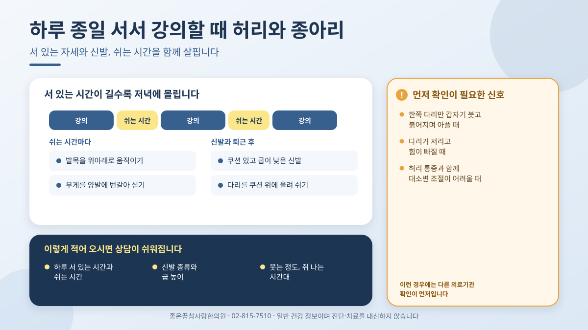

하루 종일 서서 강의해 허리와 종아리가 뻐근할 때는 쿠션 있는 신발, 체중 번갈아 싣기, 쉬는 시간 발목 움직이기부터 해 보고, 다리가 자주 붓거나 쥐가 나면 자세와 골반, 생활 습관을 함께 살핍니다.
여쭙는 것
- 하루에 서 있는 시간이 얼마나 되나요?
- 강의할 때 주로 어떤 신발을 신나요?
- 저녁이 되면 다리가 붓거나 쥐가 나나요?
생활에서 해 볼 것
- 쿠션이 있고 굽이 낮은 신발 신기
- 한쪽 다리에만 기대지 말고 무게를 번갈아 싣기
- 쉬는 시간에 발목을 위아래로 움직이기
한의원에서 함께 살필 것
- 오래 서 있은 뒤 허리가 뻐근한 경우 자세와 골반의 균형을 함께 살핍니다.
- 종아리가 자주 뭉치고 쥐가 나는 경우 잠과 생활 습관을 함께 살핍니다.
- 다리가 자주 붓는 경우 서 있는 시간과 물·짠 음식 섭취를 함께 살핍니다.
먼저 확인이 필요한 신호
- 한쪽 다리만 갑자기 붓고 붉어지며 아픈 경우
- 다리가 저리고 힘이 빠지는 경우
- 허리 통증과 함께 대소변 조절이 어려운 경우

오래 서서 강의할 때는 한쪽 다리에만 기대지 말고 체중을 번갈아 싣고, 쉬는 시간마다 발목을 움직여 주는 것이 허리와 종아리 부담을 나누는 기본입니다. 오전부터 밤까지 강의가 이어지는 날이면 집에 돌아와 종아리가 단단하게 뭉치고 허리가 뻐근하다는 강사가 많습니다. 한쪽 다리만 갑자기 붓거나 저림·힘 빠짐이 함께 온다면 먼저 확인이 필요합니다.
왜 이런 불편이 생길 수 있나요
- 오래 서 있으면 종아리 근육이 계속 몸을 버티는 일을 해서 저녁이 되면 뭉치고 무거워지기 쉽습니다.
- 한쪽 다리에 체중을 싣는 습관이 있으면 골반과 허리 한쪽에 긴장이 몰릴 수 있습니다.
- 굽이 딱딱하거나 높은 신발은 발과 종아리, 허리까지 전해지는 충격에 영향을 줄 수 있습니다.
- 물을 적게 마시고 짠 식사를 한 날 다리가 더 붓는다고 느끼는 분도 있습니다.

먼저 이렇게 여쭙니다
- 하루에 서 있는 시간이 얼마나 되나요?
- 강의할 때 주로 어떤 신발을 신나요?
- 저녁이 되면 다리가 붓거나 쥐가 나나요?
- 허리는 서 있을 때와 앉을 때 중 언제 더 불편한가요?
일상에서 먼저 해 볼 수 있는 것
- 쿠션이 있고 굽이 낮은 신발 신기
- 한쪽 다리에만 기대지 말고 무게를 번갈아 싣기
- 쉬는 시간에 발목을 위아래로 움직이기
- 퇴근 후 다리를 쿠션 위에 올려 잠시 쉬기

한의원에서 함께 살필 수 있는 경우
- 오래 서 있은 뒤 허리가 뻐근한 경우 자세와 골반의 균형을 함께 살핍니다.
- 종아리가 자주 뭉치고 쥐가 나는 경우 잠과 생활 습관을 함께 살핍니다.
- 다리가 자주 붓는 경우 서 있는 시간과 물·짠 음식 섭취를 함께 살핍니다.
좋은꿈참사랑한의원에서는 먼저 어떤 동작에서 아픈지 충분히 듣고, 필요하다고 판단될 때 초음파로 아픈 부위를 확인한 뒤 상태에 맞춰 침·약침·추나·온열 등을 정합니다. 귀가 전에는 집에서 지켜볼 점과 다음 진료 때 다시 확인할 동작을 알려 드립니다.
이렇게 기록해 오시면 상담이 쉬워집니다
- 하루 서 있는 시간과 강의 사이 쉬는 시간
- 주로 신는 신발의 종류와 굽 높이
- 저녁에 다리가 붓는 정도와 쥐가 나는 시간대
- 허리가 더 불편한 자세(서 있을 때, 앉았다 일어날 때)

이런 증상은 먼저 확인이 필요합니다
- 한쪽 다리만 갑자기 붓고 붉어지며 아픈 경우
- 다리가 저리고 힘이 빠지는 경우
- 허리 통증과 함께 대소변 조절이 어려운 경우
통증이 갑자기 심해지거나 저림·힘 빠짐이 함께 오면 영상 검사가 가능한 의료기관에서 먼저 확인하세요. 복용 중인 진통제나 다른 약은 처방한 의사와 상의 없이 줄이거나 끊지 않습니다. 다친 뒤 갑자기 크게 붓거나 열이 나고, 움직이기 어려울 만큼 아프다면 바로 응급실을 찾으세요.
한눈에 보는 표
| 구분 | 핵심 |
|---|---|
| 여쭙는 것 | 하루에 서 있는 시간이 얼마나 되나요? 강의할 때 주로 어떤 신발을 신나요? |
| 생활에서 해 볼 것 | 쿠션이 있고 굽이 낮은 신발 신기 한쪽 다리에만 기대지 말고 무게를 번갈아 싣기 |
| 한의원에서 함께 살필 것 | 오래 서 있은 뒤 허리가 뻐근한 경우 자세와 골반의 균형을 함께 살핍니다. 종아리가 자주 뭉치고 쥐가 나는 경우 잠과 생활 습관을 함께 살핍니다. |
| 먼저 확인이 필요한 신호 | 한쪽 다리만 갑자기 붓고 붉어지며 아픈 경우 다리가 저리고 힘이 빠지는 경우 |
자주 묻는 질문
압박 스타킹을 신어도 되나요?
다리 붓기가 잦다면 도움이 될 수 있지만, 피부나 혈관 질환이 있다면 먼저 확인하는 것을 권합니다.
강의 중에 의자에 앉아도 괜찮을까요?
가능하다면 앉았다 서기를 섞는 것이 한 자세로 오래 있는 것보다 몸 부담을 나누는 데 도움이 됩니다.
강의 중에 할 수 있는 간단한 동작이 있나요?
판서 사이에 발뒤꿈치를 들었다 내리는 동작을 열 번쯤 하거나 체중을 양발에 번갈아 실어 보세요. 종아리를 조금씩 움직여 주면 덜 뭉친다는 분이 있습니다.
진료 시간은 어떻게 되나요?
좋은꿈참사랑한의원은 평일 09:30~20:00(점심 13:00~14:00), 토·일·공휴일 09:30~15:00에 진료합니다.
이 글은 일반적인 건강 정보이며 개인의 진단이나 치료를 대신하지 않습니다. 증상이 있거나 복용 중인 약이 있다면 진료를 통해 확인하세요. 치료 효과는 개인마다 다를 수 있습니다.
작성 기준: 일반적으로 알려져 있는 건강 정보를 참고해 정리했습니다(대표원장 감수). 증상 기록은 1~2주 동안 하루 1회, 비슷한 시간에 적어 오시면 지난 상태와 비교하기 쉽습니다.
좋은꿈참사랑한의원은 재진 때 지난번 이야기부터 이어서 여쭙니다. 진료시간과 예약은 오시는 길에서 확인하세요.